Przemiany promieniotwórcze to przemiany zachodzące w jądrze/jądrach atomów. Podczas takiego procesu z jądra jednego pierwiastka dostajemy jądro drugiego pierwiastka, czasem też te procesy polegają na reakcji jądra z innymi cząsteczkami lub mogą w tych procesach też powstać inne cząsteczki. Procesy te możemy podzielić na naturalne i sztuczne.
Naturalne rozpady promieniotwórcze
Alfa →z jądra ulegającego tej przemianie wylatuje cząstka \(\mathbf{\alpha}\mathbf{=}_{\mathbf{2}}^{\mathbf{4}}\mathbf{He}\), inaczej powstaje jądro helu – 4 oraz jądro innego pierwiastka.
Beta minus → z jądra ulegającego tej przemianie powstaje cząstka \(\mathbf{\beta}^{\mathbf{-}}\mathbf{=}_{\mathbf{- 1}}^{\mathbf{\ \ \ 0}}\mathbf{e}^{\mathbf{-}}\), jest po prostu elektron oraz jądro innego pierwiastka. Jednocześnie należy podkreślić, iż nie ten elektron wylatuje z powłoki, tylko powstaje on przez rozpad neutronu w jadrze na proton i elektron.
Należy tutaj odróżnić zapis jonizacji od przemiany beta minus np. dla ołowiu – 214:
W procesie jonizacji z pierwiastka dostajemy jon tego samego pierwiastka oraz elektron w myśl reakcji:
\[\text{ }^{214}Pb \rightarrow \text{ }^{214}Pb^{+} + e^{-}\]
Natomiast proces rozpadu beta minus polega na wyrzuceniu elektronu z jądra atomu, otrzymujemy wtedy jądro innego pierwiastka, w postaci obojętnej, co możemy zapisać:
\[\text{ }^{214}Pb \rightarrow \text{ }^{214}Bi + e^{-}\]
Gamma → wylatuje cząstka \(\mathbf{\gamma}\mathbf{=}_{\mathbf{0}}^{\mathbf{0}}\mathbf{\gamma}\), promieniowanie takie jak swiatlo widzialne czy fale radiowe, ale dużo bardziej energetyczne. Jądra w ten sposób pozbywają się nadmiaru energii, rozpad ten występuje często jako proces równoległy podczas innych przemian promieniotwórczych.
Beta plus-> z jądra wylatuje cząstka beta – pozyton, inaczej taki dodatni elektron - \(\mathbf{\beta}^{\mathbf{+}}\mathbf{=}_{\mathbf{+ 1}}^{\mathbf{\ \ \ 0}}\mathbf{e}^{\mathbf{+}}\)oraz powstaje jądro innego pierwiastka.
Wychwyt kappa → jądro wpierdala elektron z powłoki K – jądro i elektron to substraty
\[jądro_{1} + e^{-} \rightarrow jądro_{2}\]
Cząstek często spotykanych podczas przemian promieniotwórczych, zarówno samorzutnych jak i niesamorzutnych należy się nauczyć na pamięć:
\[(alfa)\alpha =_{2}^{4}He\ \ \ \ \ \ (beta)\beta^{-} =_{- 1}^{0}e\ \ \ \ (gamma)\ \gamma =_{0}^{0}\gamma\ \]
\[{(proton)\ \ \ p}^{+} =_{1}^{1}p^{+} =_{1}^{1}H;\ \ {(neutron)\ \ n}^{0} =_{0}^{1}n^{0}\ {(elektron)\ \ \ e}^{-} =_{- 1}^{0}e^{-}\]
\[\beta^{+}(pozyton) =_{1}^{0}e^{+}(taki\ elektron\ obdarzony\ ładunkiem\ dodatnim)\]
\[(deuter)D =_{1}^{2}H\ \ \ \ \ (tryt)\ T =_{1}^{3}H\ \ \ \ \ (neutrino) =_{0}^{0}\nu\]
Trudnością zadaniach związanych z bilansem równań promieniotwórczych są inne określenia otrzymywania produktu i reakcji substratu. Bliższe w tym momencie są określenia wyjścia dla produktu (output = to co wylatuje =wybito, emitowało, wyleciało, otrzymano itp.) i wejścia dla substratu (input = bombardowano, naświetlano, poddano reakcji itp. Z uwagi na inne pojęcia niż normalnie w chemii należy wymienionych powyżej pojęć nauczyć się, a w momencie pojawienia się nowego zastanowić czy bardziej dotyczy wejścia czy wyjścia.
Reakcje promieniotwórcze rządzone są prawem zachowania masy i ładunku. Podczas tych bilansów zamiast symboli \(\alpha,\ \beta,\ \gamma\) lepiej jest pisać, co one reprezentują – czyli \(\ _{2}^{4}He\); \(\ _{- 1}^{0}e^{-}\); \(\ _{0}^{0}\gamma\) . Jednocześnie należy przypomnieć, iż liczba protonów czyli liczby masowej jednoznacznie definiuje jaki mamy pierwiastek, a znajomość symbolu pierwiastka jednoznacznie mówi ile ma on protonów. \(\ _{Z}^{A}E\ \ to\ E < = > Z\)
\[\mathbf{\ }_{\mathbf{\ \ \ 92}}^{\mathbf{235}}\mathbf{U\ }\mathbf{+ \ }_{\mathbf{0}}^{\mathbf{1}}\mathbf{n}^{\mathbf{0}}\mathbf{\rightarrow}\mathbf{\ }_{\mathbf{\ \ \ 54}}^{\mathbf{140}}\mathbf{Xe\ }\mathbf{+ \ }_{\mathbf{\ 38}}^{\mathbf{\ 93}}\mathbf{Sr +}\mathbf{3\ }_{\mathbf{0}}^{\mathbf{1}}\mathbf{n}^{\mathbf{0}}\]
Bilans masy mówi, że suma mas dla reakcji po lewej (substratów) =suma mas po prawej (produkty), albo jeszcze bardziej obrazowo suma tego na górze po lewej = suma tego na górze po prawej.
Bilans ładunku suma ładunków dla reakcji po lewej (substratów) =suma ładunków po prawej (produkty), albo inaczej suma tego na dole po lewej = suma tego na dole po prawej
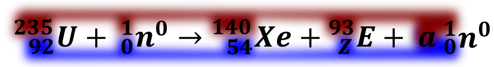
.
Np. Rozwiązanie powyższego problemu, w którym mamy ustalić ilość wylatujących neutronów, liczbę atomową i symbol pierwiastka \(E\).
Wykonując bilans masy („góry, czerwonego”) otrzymujemy
\[subsraty = produkty\]
\[235 + 1 = 140 + 93 + 1·a\]
\[a = 3\]
Wykonując bilans masy („dołu, niebieskiego”) otrzymujemy
\[92 + 0 = 54 + Z + a·0\]
Po wstawieniu i rozwiązaniu
\[Z = 38\]
I mając liczbę atomową równą =38 możemy powiedzieć, co to za pierwiastek, jest jednoznacznie stront i możemy napisać reakcje jądrową wstawiając obliczone wartości
\[\mathbf{\ }_{\mathbf{\ \ \ 92}}^{\mathbf{235}}\mathbf{U\ }\mathbf{+ \ }_{\mathbf{0}}^{\mathbf{1}}\mathbf{n}^{\mathbf{0}}\mathbf{\rightarrow}\mathbf{\ }_{\mathbf{\ \ \ 54}}^{\mathbf{140}}\mathbf{Xe\ }\mathbf{+ \ }_{\mathbf{\ 38}}^{\mathbf{\ 93}}\mathbf{Sr +}\mathbf{3\ }_{\mathbf{0}}^{\mathbf{1}}\mathbf{n}^{\mathbf{0}}\]
Izotop radu \(\text{ }^{226}Ra\) ulega rozpadowi alfa. Tej przemianie towarzysz emisja promieniowania gamma. Cząstki alfa emitowane przez rad mogą służyć do wybijania neutronów z lekkich jąder np. berylu \(\text{ }^{9}Be\).
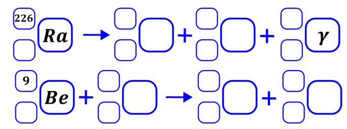
Zadanie rozpoczynamy od sprawdzenia liczby atomowej radu (88) i berylu (4), które należy wpisać przy ich symbolach w celu późniejszego bilansu ładunku. Jednocześnie należy wpisać wartości ładunku i masy cząstki gamma (odpowiednio 0 i 0), oraz ustalić czym jest cząstka alfa w obu tych procesach. Dla procesu rozpadu alfa cząstka alfa, czyli atom helu – 4 musi być zgodnie z definicją produktem. Natomiast druga reakcja jest bardziej problematyczna. Zgodnie z treścią zadania cząstka alfa jest w niej używana - więc musi być substratem do wybijania neutronów – wybijania, czyli neutrony wylatują z tego procesu, a więc są produktem. Neutron ma masę jeden, a ładunek zero, co też oczywiście wpisujemy w odpowiednie miejsca. Nieznane cząstki opisujemy jako \(\text{ }_{Z}^{A}E\) Po wstawieniu cząstek elementarnych w odpowiednie miejsca dostajemy.
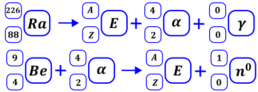
Aby ustalić brakujące cząstki w reakcjach wykonujemy bilans masy i ładunku
Dla pierwszej reakcji
\[226 = A + 4 + 0 \rightarrow A = 222\]
\[88 = Z + 2 \rightarrow Z = 86\]
Mając ustaloną liczbę atomową szukamy pierwiastka o takiej liczbie i jest to radon.
Dla drugiej reakcji również wykonujemy bilans masy
\[9 + 4 = 1 + A \rightarrow A = 12\]
Oraz bilans ładunku:
\(4 + 2 = 0 + Z \rightarrow Z = 6\) Oczywiście mając znaną liczbę atomową możemy powiedzieć, o jakim pierwiastku mówimy. Liczbą atomową równą 6 ma oczywiście węgiel. Wstawiwszy pierwiastki dostajemy pełne równania przemian promieniotwórczych
Tenes – pierwiastek chemiczny o liczbie atomowej Z=117 – otrzymano w reakcji jądrowej między 48Ca i 249Bk. W tym procesie powstały dwa izotopy tenesu, przy czym w reakcji tworzenia jądra jednego z tych izotopów towarzyszyła emisja 3 neutronów. Ten izotop ulegał dalszym przemianom: w wyniku kilku kolejnych przemian alfa otrzymano dubn – 270Db.
Napisz równanie reakcji otrzymywania opisanego izotopu tenesu – uzupełnij wszystkie pola w poniższym schemacie. Napisz w wyniku ilu przemian alfa ten izotop tenesu przekształcił się w 270Db.
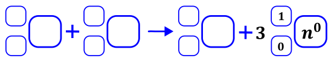
Zadania rozpoczynamy od ustalenia liczby atomowej wymienionych jąder. Liczbę atomową tenesu mamy napisaną w zadaniu, alternatywnie można go odnaleźć w układzie okresowym. Liczbę atomową wapnia i bekerelu znajdujemy w układzie okresowy, wynoszą one odpowiednio dla wapnia 20, a dla belekerelu 97. Uzupełniamy zapis równania reakcji odczytanymi informacjami, za liczbę masową piszemy A, to jest wartość szukana. Po umieszczeniu dostajemy:
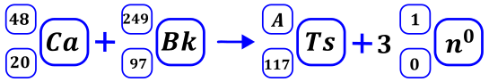
Jak widać, aby uzyskać wartość A wystarczy zrobić tylko bilans masy:
\[48 + 249 = A + 3·1\]
\[A = \mathbf{342}\]
Wstawiwszy tę wartość do równania mamy wypełnione wszelkie pola w równaniu reakcji.
Przechodzimy do rozwiązania dalszej drugiej części zadania: „Napisz w wyniku ilu przemian alfa ten izotop tenesu przekształcił się w 270Db”. Liczba atomowa dubnu to 105, jest on zdecydowanie produktem tej reakcji. Cząstka alfa jak dobrze wiemy o jądro helu o liczbie masowej 4 i liczbie atomowej 2. Takich cząstek otrzymujemy x. Atom, który ulega rozkładowi to atom senesu, który otrzymaliśmy w poprzedniej reakcji. Możemy reakcję napisać jako:
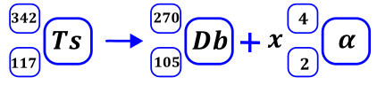
Bilans ładunku daje
\[117 = 105 + 2x\]
\[x = 6\]
Ten sam wynik uzyskujemy przez bilans masy
\[342 = 270 + 4x\]
\[x = 6\]
Powstaje więc 6 cząstek alfa.
Należy podkreślić, iż dla reakcji ogólnej, w której powstają cząstki alfa oraz beta w nieznanej ilości, ale wiemy jakie mamy substrat i produkt można względnie łatwo obliczyć ilość tych przemian przez napisanie reakcji ogólnej, zrobienie bilansu wpierw masy (a z tego znamy ilość przemian alfa), a potem ładunku ( z niego mamy ilość przemian beta)
Rozważmy przykład.
w wyniku kilku przemian alfa i beta izotopu radu -226 otrzymujemy izotop ołowiu -210. Ile było przemian alfa i beta?
W celu rozwiązania tego zadania piszemy równanie całkowitej przemiany promieniotwórczej, gdzie x to ilość przemian alfa czyli powstałych jąder helu, a y to ilość powstających elektronów czyli przemian beta.
\[\]
Bilans masy daje nam zależność
\[226 = 210 + 4x + 0y\]
Rozwiązując równanie dostajemy X równe 4, co jest ilością powstałych cząstek alfa.
Znając wartość współczynnika X możemy napisać równanie związane z bilansem ładunku
\[88 = 82 + 2x + ( - 1)·y\]
Wstawiając obliczone z poprzedniego równania X =4 otrzymujemy
\[88 = 82 + 2·4 + ( - 1)·y\]
I rozwiązując dostajemy ilość rozpadów beta jako równa \(y = 2\)
Możemy wiec napisać, iż powstały 4 cząstki alfa i 2 elektrony, czyli zaszły 4 przemiany alfa i dwie przemiany beta.
Pierwiastki promieniotwórcze występujące naturalnie ulegają określonym dla danego pierwiastka przemianom promieniotwórczym. Przemiany te prowadzą do stabilnego jądra pierwiastka składając się z szeregu przemian alfa i beta. Ciąg taki nazywa się szeregiem promieniotwórczym, do w jego nazwie dodatkowo podajemy od jakiego pierwiastka startujemy i przez jaki najbardziej stabilny pierwiastek przechodzimy, czyli np. szereg uranowy - radowy zaczyna się od uranu i przechodzi przez rad. Szereg taki można umieścić na grafie, w którym przedstawiamy kolejne przemiany; graf konstruujemy zwykle przez umieszczenie na osi x liczby atomowej pierwiastków, a na osi y liczby masowej. Poniżej przedstawiono szereg uranowo radowy:
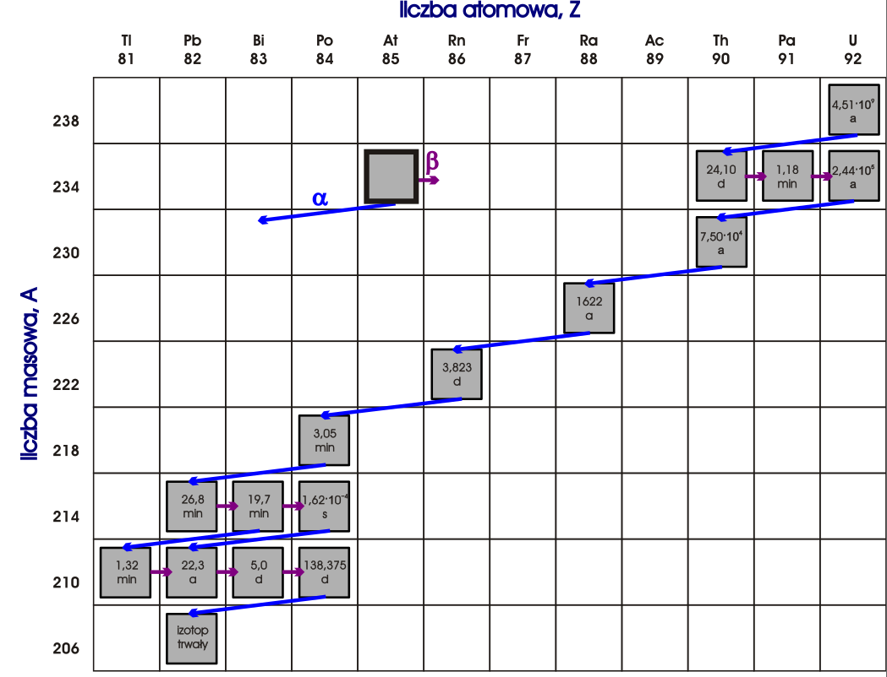
Widać, iż na przedstawionym wykresie przemiana alfa odpowiada zawsze obniżeniu liczby atomowej o dwa, tzn. dostajemy pierwiastek mający o dwa protony mniej niż wyjściowy, co odpowiada przesunięciu się w układzie okresowym o dwa w tył; oraz o liczbie masowej o cztery mniejszej wobec początkowego atomu, co odpowiada stracie dwóch protonów i dwóch neutronów wobec wyjściowego pierwiastka. Przemiana beta z kolei odpowiada wypromieniowaniu elektronu z jądra atomowego, czyli przemianie neutronu w proton. Powoduje ona obniżenie ilości protonów o jeden, więc liczba atomowa spada o jeden, natomiast ilość neutronów zwiększa się o jeden, więc sumaryczna masa atomowa się nie zmienia.
Wiedząc, iż szereg uranowo –radowy rozpoczyna się od \(\text{ }_{92}^{238}U\), a kończy się na \(\text{ }_{82}^{206}Pb\) w opisany powyżej sposób można ustalić np. Ilość przemian alfa i beta
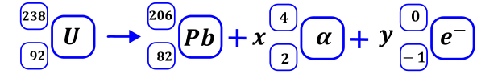
Dokonując bilansu masy dostajemy
\[238 = 206 + 4x\]
\[x = 8\]
Oraz kolejno bilansu ładunku możemy napisać, iż
\[92 = 82 + 8·2 + y·( - 1)\]
\[y = 6\]
Czyli w szeregu mamy osiem przemian alfa i sześć przemian beta.
Jednym z produktów rozszczepienia jądra uranu jest izotop baru 143Ba. W wyniku czterech kolejnych przemian promieniotwórczych zapoczątkowanych przez 143Ba powstaje izotop neodymu, mający w swoim jądrze 83 neutrony. Ta sekwencja przemian przedstawiona na poniższym schemacie.
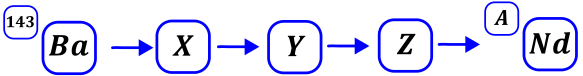
Wiedząc, że przemianami mogą być \(\alpha,\ \beta^{-},\ \beta^{+}\) podaj rodzaj i ilość poszczególnych przemian w opisanej reakcji.
Zadanie rozpoczynamy od ustalania liczby atomowej baru i neodymu. Po odnalezieniu ich w układzie okresowym jasno widać, że bar ma liczbę atomową równą 56, a neodym 60. Kolejno możemy ustalić ile jaką liczbę masową ma ten izotop neodymu. Oczywiście liczba masowa to suma ilości protonów i neutronów w jądrze, w tym wypadku jest to 60+83=143; powyższe informacje umieszczamy w zapisie reakcji. Możemy zapisać przemianę całkowitą oznaczając przez zmienne x,y,z ilość powstałych cząstek alfa, beta minus i beta plus, jako:
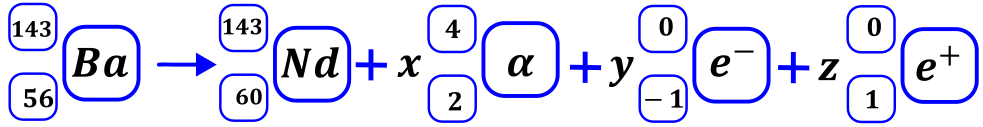
Możemy teraz ułożyć trzy równania związane z bilansem masy, bilansem ładunku oraz ilością przemian.
Bilans masy
\[143 = 143 + 4x + 0y + 0z\]
Bilans ładunku
\[56 = 60 + 2x - 1y + 1z\]
Bilans ilości przemian, wiemy, że mieliśmy łącznie cztery przemiany promieniotwórcze, a więc powinniśmy łącznie dostać cztery cząstki elementarne
\[4 = x + y + z\]
Rozwiązując powyższe równania dostajemy
\[x = 0;\ y = 4;z = 0\]
W literaturze przedmiotu jak również na maturach spotykany jest zapis
\[jądro_{1}\left( cząstka_{1};cząstka_{2} \right)jądro_{2}\]
Jest on tożsamy z
\[jądro_{1} + cząstka_{1} \rightarrow jądro_{2} + cząstka_{2}\]
I aby rozwiązać zadanie oparte na tym zapisie należy najpierw zapisać reakcję według „normalnego” zapisu i obliczyć poszukiwane wartości, uzupełniając potem zapis reakcji.
Przebieg reakcji jądrowych można przedstawić w postaci zapisu skróconego. Na pierwszym miejscu podaje się symbol jądra bombardowanego, następnie w nawiasie – kolejno – symbole cząstki bombardującej i lekkiej cząstki emitowanej, a na końcu – symbol jądra produktu.
Pewien izotop kobaltu można otrzymać w przemianach jądrowych, których sumaryczny przebieg przedstawiono na poniższym schemacie. Symbol e oznacza elektron.
\[\text{ }_{\mathbf{\ }}^{\mathbf{58}}\mathbf{Fe\ }\left( \mathbf{2}\mathbf{x,e} \right)\mathbf{\ \ }\mathbf{\ }_{\mathbf{\ }}^{\mathbf{Y}}\mathbf{Co}\]
Napisz równanie przemiany jądrowej, która przebiega według powyższego schematu. Uzupełnij wszystkie pola odpowiednimi symbolami i wartościami liczbowymi.
Oczywiście zadanie rozpoczynamy od ustalenia liczby atomowej żelaza i kobaltu. Odszukując te pierwiastki, widzimy, że liczba atomowa żelaza to 26, a kobaltu 27; elektron z kolei to masa 0 i ładunek -1. Nieznamy za to parametrów cząsteczki, po za jej masą, która jest wpisana i wynosi jeden. Oznaczmy tą cząsteczkę zgodnie z opisem jako X, a jej ładunek jako Z
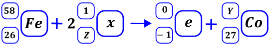
Wykonując bilans masy możemy ustalić masę izotopu kobaltu, który dostajemy w reakcji.
\[58 + 2·1 = 0 + Y\]
\[Y = 60\]
Kolejno wykonując bilans ładunku znajdujemy ładunek cząsteczki \(x\).
\[26 + 2Z = - 1 + 27\]
\[Z = 0\]
Poszukiwana cząsteczka \(x\) ma więc ładunek równy zero i masę 1. Po sprawdzeniu parametry te pasują do neutronu. Możemy więc uzupełnić równanie reakcji promieniotwórczej:
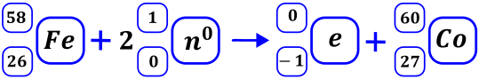
Pewną ciekawostką jest, że możemy stabilne izotopy pierwiastków promieniotwórczych tworzą tzw. ścieżkę trwałości. Tworząc wykres rodzaju przemiany danego izotopu w zależności od jego liczby neutronów i liczby masowej możemy zobaczyć, że stabilne izotopy układają się na pewnej krzywej, dodatkowo stabilne izotopy często mają parzyste ilości protónów oraz neutronów. Dla względnie małych atomów ( do liczby atomowej równej 82 - ołowiu) przeważają rozpady beta plus dla jąder posiadających masę atomową powyżej ścieżki trwałości oraz beta minus lub wychwyt Kappa dla jąder posiadających masę poniżej. Rokład alfa zaczyna się pojawiać dla jąder o względnie wysokiej trwałości (jądro o liczbie atomowej 52 – tellur), natomiast dominuje dla pierwiastków o liczbie atomowej powyżej ołowiu. Dodatkowo widzimy, iż dla jąder o wysokich liczbach atomowych występuje może wystąpić rozszczepienie jądra na dwa fragmenty. Dla jąder o względnie małych liczbach atomowych i znacznie większej masie atomowej niż dla stablinych izotopów może wystąpić wyrzucenie neutronu, natomiast przy znacznym niedomiarze masy atomowej wobec stabilnego izotopu może wystąpić wyrzucenie protonu. Izotopy położone na ścieżce trwałości mają tyle mniej więcej tyle samo neutronów co protonów, z nadmiarem tych pierwszym dla cięższych pierwiastków.
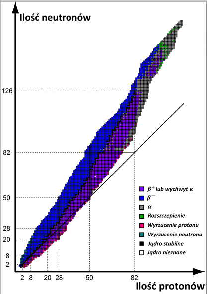